ECON 2041
Introductory Econometrics
Income & happiness
Plan for the semester
1 What is econometrics?
2 Basic mathematical tools
3 Stats fundamentals
4 Stats fundamentals II
5 Simple regression
6 OLS properties & fit
7 Flavors of OLS & OVB Quiz
8 Causality
9 Regression inference
10 Inference, continued PS due 16 Oct
11 Diagnostics
12 Measurement error & IRL
13 Revision
Happiness
Happiness
Cantril Ladder score
Source: Gallup World Poll
Please imagine a ladder, with steps numbered from 0 at the bottom to 10 at the top. The top of the ladder represents the best possible life for you, and the bottom of the ladder represents the worst possible life for you. On which step of the ladder would you say you personally feel you stand at this time?
GDP per capita
GDP per person, adjusted for inflation and purchasing power
- Total value added from the production of G&S in country
- Divided by population
- PPP-adjusted
- In "international dollars"
- Source: World Bank
Cross-sectional data
- 144 countries in 2024
- GDP per capita (X) & happiness (Y) are both continuous RVs
- Why? They're draws from a larger conceptual population
Experiment
- draw a set of respondents from each country
- calculate their average life satisfaction
Sample space
- set of all possible tuples of country averages you could get
- X maps each outcome of that process to a number
Now let's open the data!
Open this week's lecture notebook and follow along:
https://emiliatjernstrom.com/econ2041/lectures/w03
It will open directly in Colab
Click Copy to Drive first, so you can save any edits
The notebook reproduces every figure in today's slides
The mean and the median disagree about GDP
| count | mean | std | min | 25% | 50% | 75% | max | |
|---|---|---|---|---|---|---|---|---|
| Happiness | 144 | 5.58 | 1.15 | 1.36 | 4.71 | 5.87 | 6.47 | 7.74 |
| GDP_pc | 144 | 27,642 | 26,296 | 1,409 | 7,057 | 17,796 | 42,378 | 134,549 |
Most countries rate between 4 & 7
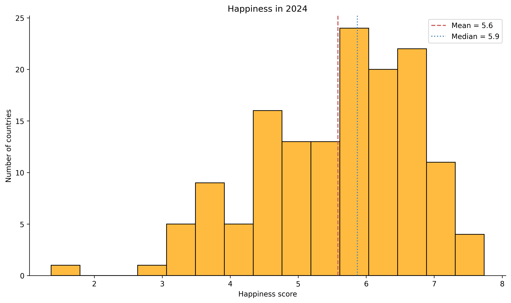
Data: Gallup World Poll & World Bank, via Our World in Data
GDP per capita is strongly right-skewed
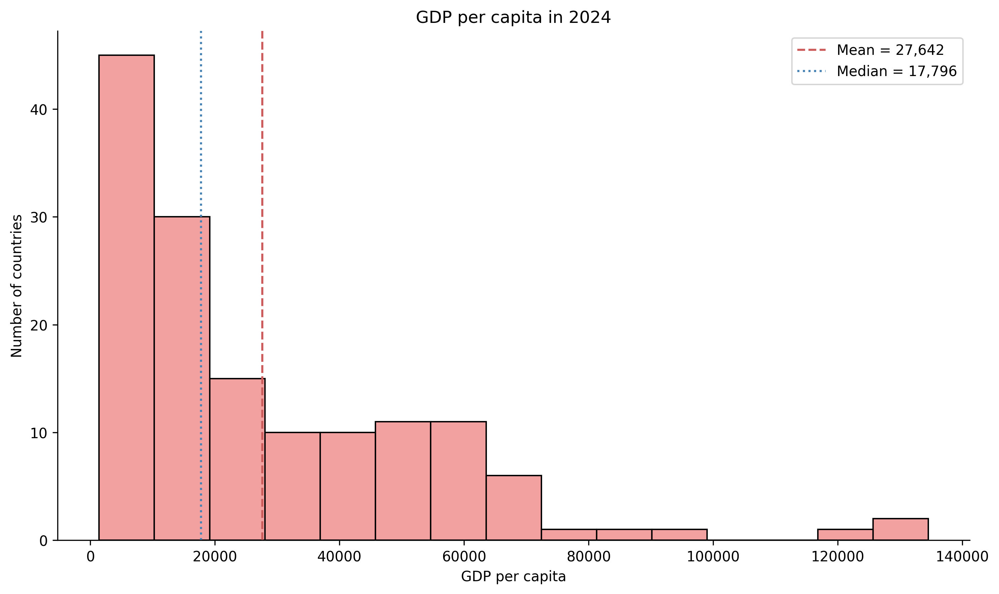
Each picture is one line of code
Happiness, given GDP
\mathbb{E}[\,\text{Happiness} \mid \text{GDP per capita}\,]
Conditioning is a Boolean
| Entity | GDP_pc | mask |
|---|---|---|
| Afghanistan | 1,964 | False |
| Albania | 21,641 | True |
| Algeria | 15,502 | False |
| Argentina | 26,772 | True |
| Armenia | 20,079 | True |
Happiness conditional on GDP
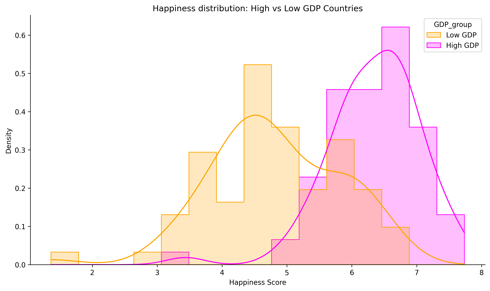
Happiness conditional on GDP: independent?
The joint distribution: one dot per country
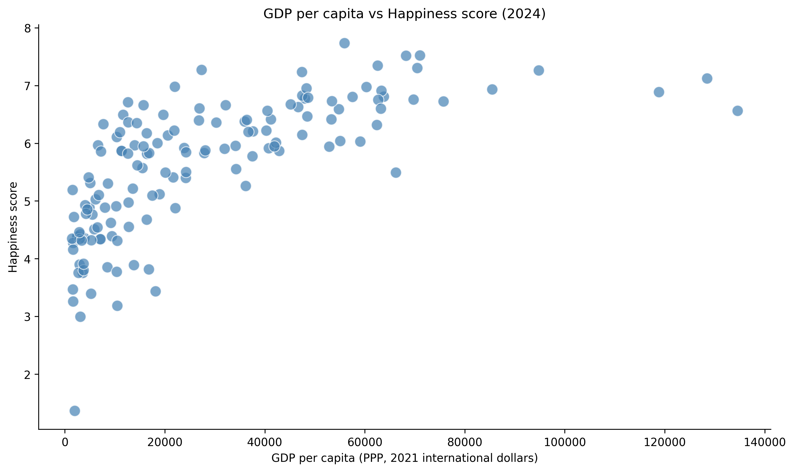
Data: Gallup World Poll & World Bank, via Our World in Data
The joint distribution is one line of code, too
The median split, in color
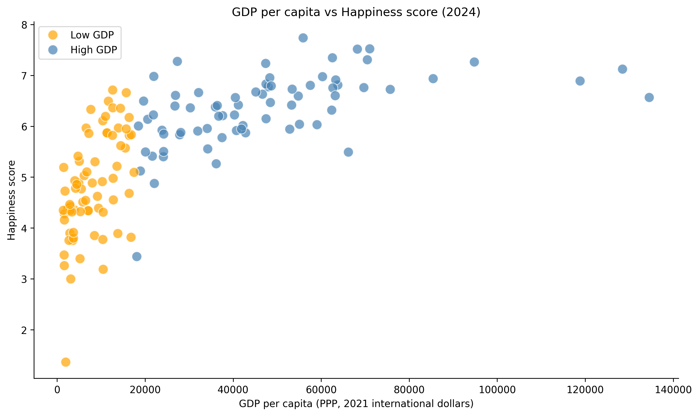
Is the median the right split?
- Richer half vs poorer half
- Top third vs bottom third
- Top quarter vs bottom quarter
- Top tenth vs bottom tenth
More extreme comparisons
| Rule | N high | N low | Mean high | Mean low | Gap | s.e.(gap) |
|---|---|---|---|---|---|---|
| Richer half vs poorer half | 72 | 72 | 6.35 | 4.82 | 1.53 | 0.14 |
| Top third vs bottom third | 48 | 48 | 6.58 | 4.47 | 2.11 | 0.14 |
| Top quarter vs bottom quarter | 36 | 36 | 6.73 | 4.33 | 2.41 | 0.16 |
| Top tenth vs bottom tenth | 15 | 15 | 6.88 | 4.03 | 2.85 | 0.26 |
The humps pull apart, and get bumpier
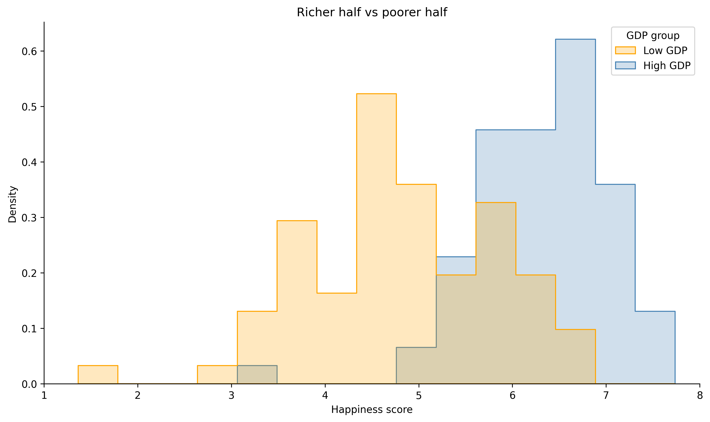
The humps pull apart, and get bumpier
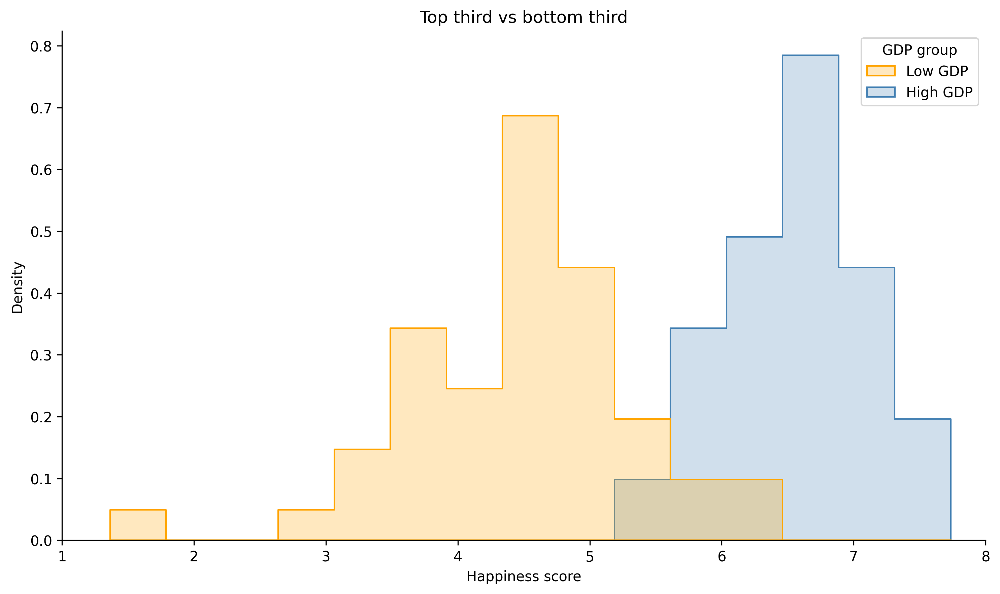
The humps pull apart, and get bumpier
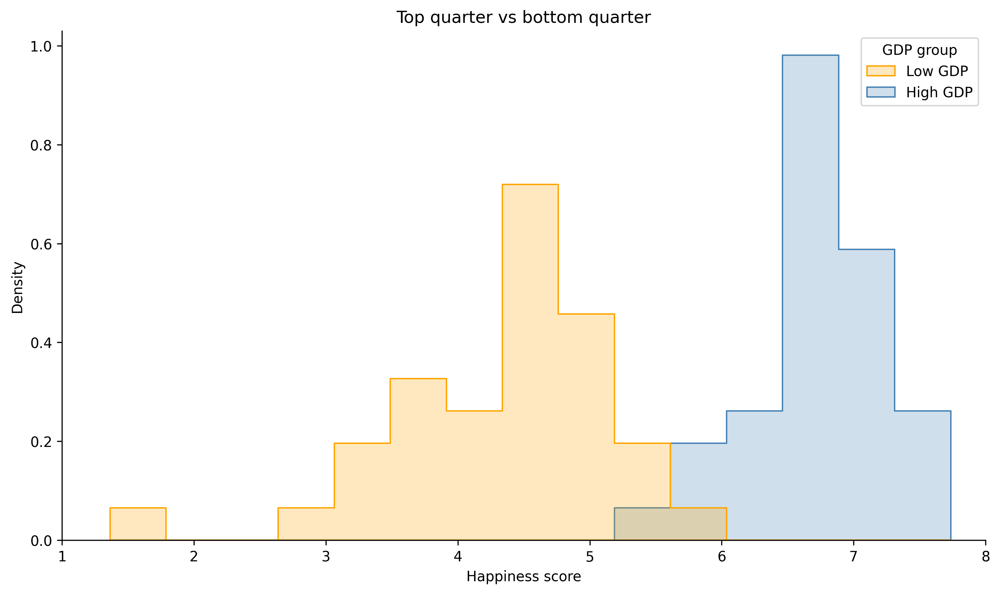
The humps pull apart, and get bumpier
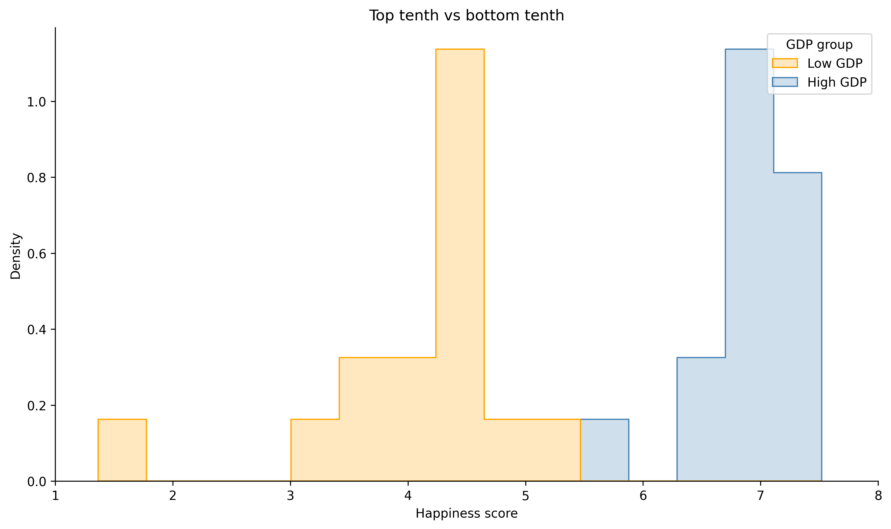
What each rule throws away
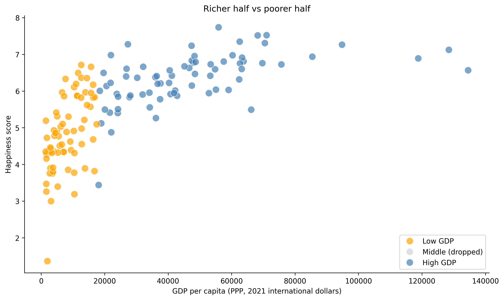
What each rule throws away
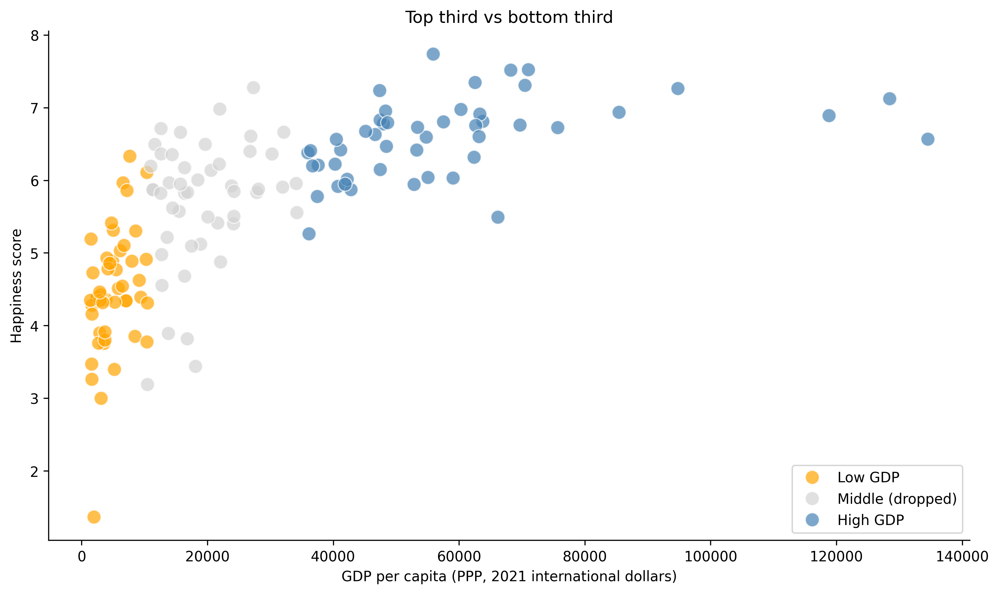
What each rule throws away
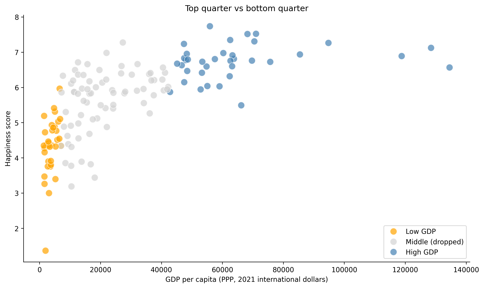
What each rule throws away
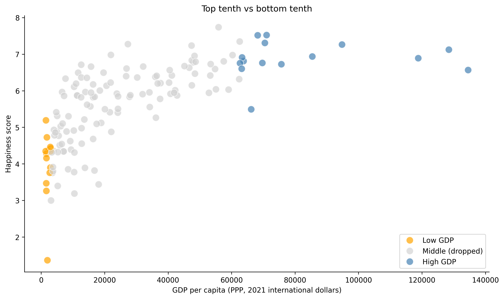
Nothing in the data tells you which cut is correct
Some take-aways
- We can tell stories with data
- Visualization is powerful
- Always explore first
Before you go: forecast your semester
One more portal round, open now
- Open your portal link
https://emiliatjernstrom.com/econ2041/portal.html
OR scan the QR code, then enter your code - Forecast your own final mark, then judge three hypothetical students
Portal answers are anonymous & ungraded
Results revealed next week

The SES survey
Shapes Macquarie's teaching, support, and services
- Results affect university rankings, which in turn affects how employers view us... and you!
- You can win $1,000!
- Open until 30 August
- Link in your student email
(from ses@srcentre.com.au), or scan the code